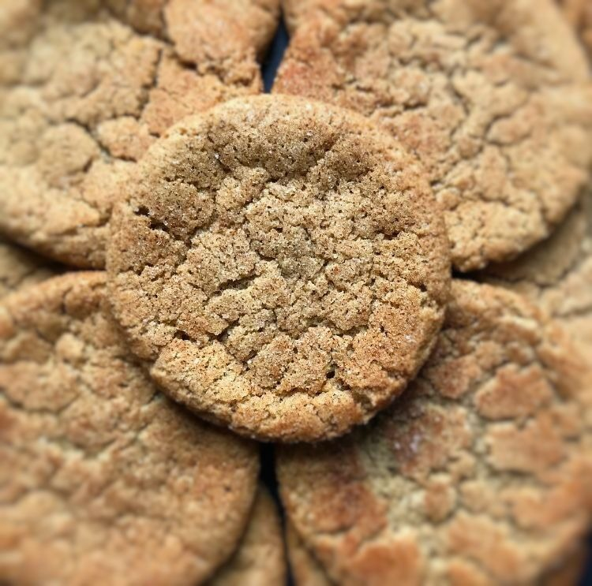

Pumpkin Spice Sugar Cookies

Description
If a homemade pumpkin pie and a soft sugar cookie had little cookies of their own, well, let these speak for themselves. Add your favorite seasoned nuts if you wish. I happened to have had some caramelized sugar I had previously made and I crushed this up and added to the top of some of the cookies just before baking.
Ingredients
- 1 ½ cups butter, softened
- 2 cups white sugar
- 2 eggs
- 2 teaspoons vanilla extract
- 3 ½ cups all-purpose flour
- 1 tablespoon pumpkin pie spice
- 1 teaspoon baking powder
- 1 teaspoon salt
- cooking spray
- ¼ cup white sugar, or as needed
Steps
- Beat butter and 2 cups sugar with an electric mixer in a large bowl until creamy. Add eggs and vanilla; beat until smooth.
- Sift flour, pumpkin pie spice, baking powder, and salt together in a bowl. Add flour mixture to butter mixture and beat until flour is completely incorporated. Cover dough with plastic wrap and refrigerate until chilled, at least 1 hour.
- Preheat oven to 375 degrees F (190 degrees C). Spray baking sheets with cooking spray.
- Pour 1/4 cup sugar into a shallow bowl.
- Drop spoonfuls of dough 2 inches apart onto prepared baking sheets. Moisten the bottom of a glass with water and dip the glass in sugar. Gently flatten each drop of cookie dough with the bottom of the sugared glass.
- Bake cookies in the preheated oven until set, 5 to 7 minutes.